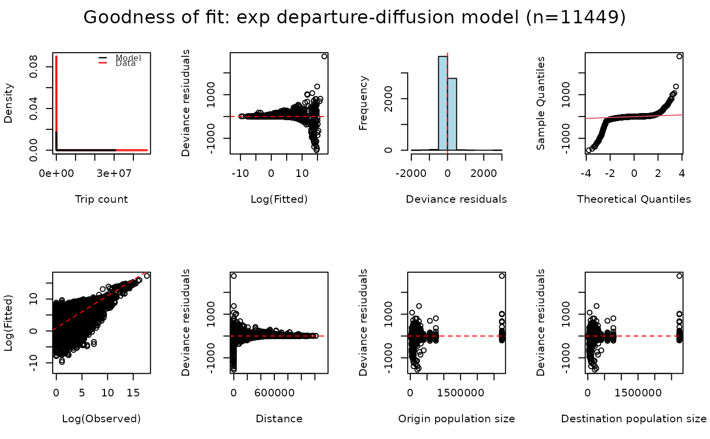

check.RdThis function takes a nomad_model object and calculates goodness of fit
metrics for the underlying mobility::mobility(). If the Deviance
Information Criterin (DIC) was calculated in the supplied model object,
it is included in output. When plots = TRUE, two plots are shown containing
the posterior distribution of trip counts compared to observed data and a
Normal Q-Q plot showing the quantiles of model residuals against those
expected from a Normal distribution.
check(object, plots, ...)a nomad_model() object containing the fitted mobility
logical indicating whether to plot the Posterior Predictive Check and Normal Q-Q Plot (default = TRUE)
further arguments passed to or from other methods
a list of goodness of fit measures
Goodness of fit metrics include:
Other model:
compare(),
fit_jags(),
fit_prob_travel(),
mobility(),
predict(),
residuals(),
summary()
# Get nomad_model object
nmd_model <- nomad::model_db$zmb_cdr_2020_mod_dd_exp
# Check model fit
nomad::check(nmd_model)

#> $DIC
#> [1] 76328739
#>
#> $RMSE
#> [1] 172445.4
#>
#> $MAPE
#> [1] 23473.45
#>
#> $R2
#> [1] 0.7952939
#>
# Get nomad_model object without underlying data
nmd_model <- nomad::model_db$zmb_fb_2020_mod_grav_exp
# Model check statistics are still available as these are
# saved when model data is removed from object
nomad::residuals(nmd_model)
#> Residuals not available as underlying model data is not available.